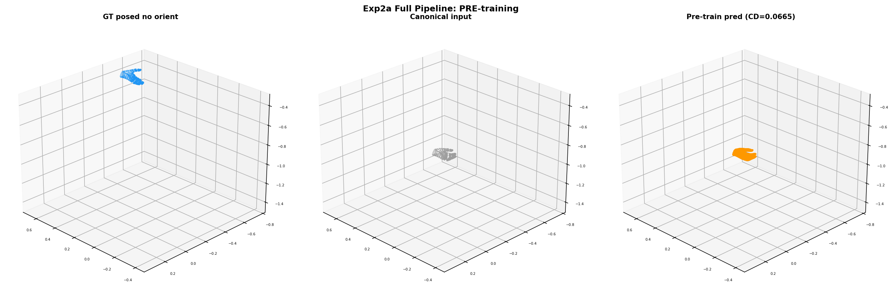
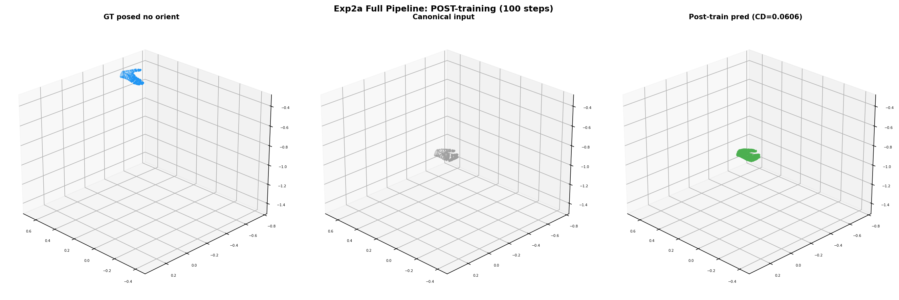
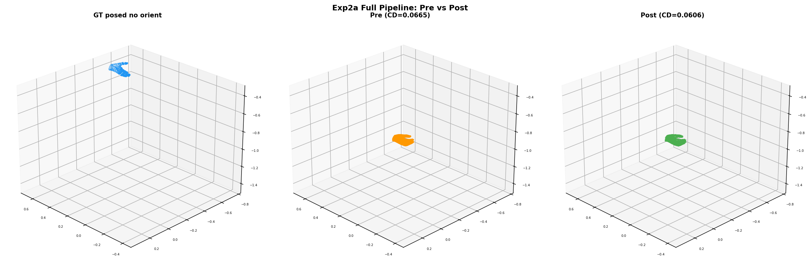

Goal: Train the full HOI3R pipeline (input_proj + global_blocks + output_proj + SLat decoder) to deform canonical T-pose hand mesh into per-frame posed hand mesh, using chamfer loss.
First experiment training the full HOI3R pipeline to learn canonical→posed deformation:
Encoder input: canonical T-pose hand (MANO pose=0, shape=0)
↓
SLat encoder (frozen) → canonical SLat (631 tokens, 32-dim)
↓
input_proj (32 → 1024) ← trained
↓
global_blocks (+image tokens) ← trained (302M params, attends to per-frame image)
↓
output_proj (1024 → 32) ← trained
↓
SLat decoder → predicted mesh ← trained (474M params)
↓
chamfer_loss(pred, posed_GT) ← posed w/o global orient
| Metric | Value |
|---|---|
| Canonical ↔ posed chamfer (deformation gap) | 0.0665 |
| Pre-train CD (pred vs posed GT) | 0.0665 |
| Post-train CD (500 steps) | 0.0606 |
| Best CD (step ~370) | 0.0567 |
| Improvement | −8.9% (final), −14.7% (best) |
Chamfer distance over training:
| Step | Loss | CD_gt |
|---|---|---|
| 1 | 0.0164 | 0.0677 |
| 100 | 0.0188 | 0.0650 |
| 200 | 0.0164 | 0.0621 |
| 300 | 0.0145 | 0.0576 |
| 370 | 0.0145 | 0.0567 |
| 500 | 0.0158 | 0.0606 |

Pre-training: GT posed (blue), canonical input (gray), prediction (orange). The prediction matches the canonical input — no deformation yet. CD=0.0665.

Post-training: GT posed (blue), canonical input (gray), prediction (green). The prediction moves toward the posed GT. CD=0.0606.

GT posed (blue), pre-training prediction (orange), post-training prediction (green). Post-training is closer to GT.
The global_blocks + input_proj/output_proj + SLat decoder jointly learn to transform canonical SLat toward posed mesh. Chamfer loss flows through the decoder to all trainable modules. This is the first successful deformation training in the HOI3R pipeline.
Each step takes ~4s because the full STream3R forward pass (patch_embed + frame_blocks + global_blocks) runs every step, even though only global_blocks is trainable. Optimizations for future runs:
frame_blocks (deterministic) — only run global_blocks each stepglobal_blocks to reduce memoryCurrent experiment overfits a single frame. Next steps: